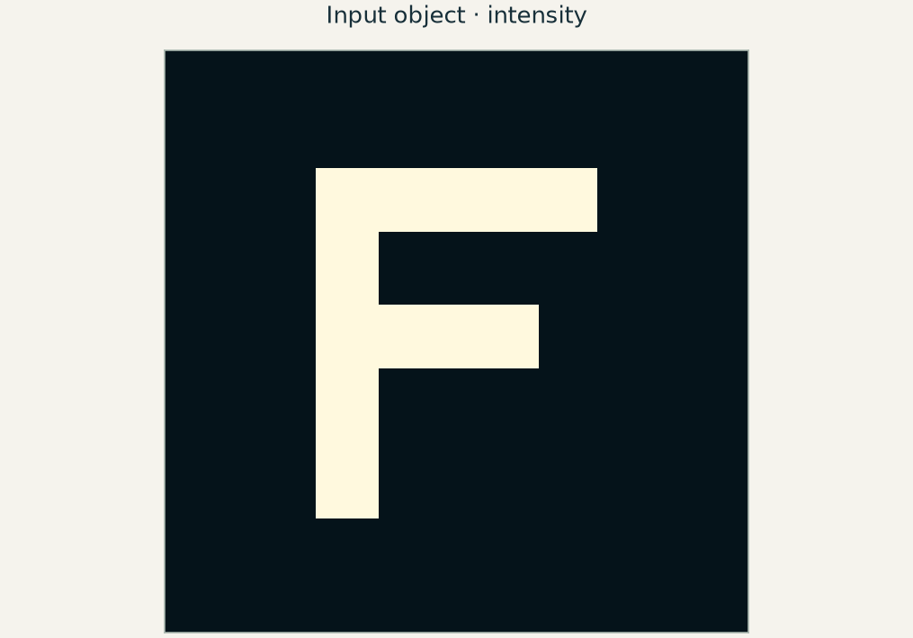

当前概念
复振幅与相位
本章涉及
同时保留振幅与相位，描述探测器测量强度之前的光场行为。

本章涉及的概念
在知识图谱中查看本章 ↓E02 / 为什么学这一课？
假设你想去掉细碎纹理、突出边缘，或看清几乎不可见的透明物体。透镜让你能够直接接触光场的空间频率，因此在两片透镜之间放置掩模，就能改变哪些特征最终到达相机。
你将学会： 学会选择滤波器的位置，预测它对振幅物体与相位物体的影响，并判断哪些图像细节会被去掉。
学习 E02 之前 / 预备知识
有帮助的前序课程： E01
针对不熟悉的概念阅读指定章节，然后回到本课。
阅读欧拉公式、极坐标形式、乘法和复共轭的讲义。微分方程中的应用可以暂时跳过。
先读 §4.1 的变换对，再读 §4.2.1–4.2.4 的线性、缩放、平移和卷积。连续两次变换可参阅 §4.2.7。
Python 实验准备： 使用二维 FFT，并区分频率格点坐标与焦平面坐标。
NumPy · 初学者基础指南 ↗ · NumPy · 离散傅里叶变换 ↗
本课将展开： 将透镜的傅里叶面与空间滤波、相位衬度联系起来。
浏览全部预备知识与学习资源 →E02 / 五分钟短片
先观看短片，再用下方实验亲手检验其中的概念。
5:13 · E02 · 为什么透镜能做傅里叶变换在 YouTube 观看 ↗
平面波由方向和相位描述。有限尺寸的透镜只能收集其中有限的一部分，所以会形成有宽度的焦斑，而非数学上的点。改变平面波方向，焦斑就会移动。因此，焦平面把角谱变成了可观察的空间图案。
这里 f 是焦距，fₓ 是以单位长度周期数表示的横向空间频率，x_f 是焦平面坐标。这一关系属于近轴傅里叶模型。f 加倍，焦斑位移也加倍；在入瞳固定时，衍射尺度同样变大。该平面上的图案变大，并不会创造新信息。
为什么会出现傅里叶变换？自由传播包含一个二次相位，也称啁啾相位。薄透镜在近轴条件下提供相反的二次相位。传播到焦距时，其中一个二次项被抵消，剩下的交叉项就是傅里叶核。将物体放在前焦面，还会去掉另一个依赖坐标的相位，得到标准的前焦面到后焦面变换。
本页分开展示两个实验。上方曲线使用具有物理单位的波长、焦距和倾角。下方的字母采样实验使用无量纲像素坐标，让你专注于傅里叶滤波，而不把图像采样与放大率混为一谈。
调整参数之前，先做预测
保持透镜不动，倾斜入射平面波。焦斑应该朝哪边移动？然后预测中心遮挡对振幅图像的影响。
02 / 检验预测
所有光场和曲线均由所述模型计算得到。检验预测时，请固定其余参数。
模型： 相干单色标量照明、理想近轴透镜和薄傅里叶掩模。焦斑图使用高斯入射光场。4f 图使用周期采样光场；不包含像差、有限探测器像素或噪声。
4f 系统包含两片透镜和一个共用的傅里叶面。第一片透镜产生物体的复频谱，掩模乘到这个频谱上；第二片透镜再做一次正向傅里叶变换，得到倒置的空间光场。最后，相机记录光场的模平方。
没有掩模时，除坐标缩放和整体相位外，两次变换将 x 映射到 −x。低通掩模只保留缓慢变化的光场分量，使锐利边缘展宽。中心遮挡去掉低频，包括大部分平滑背景。剩余光场通常突出变化区域，但其记录强度并不简单等于原图像带符号的导数。
薄相位物体将光场乘以 eiφ(x,y)。即使 φ 随位置变化，强度也可能仍然均匀。对于弱相位物体，eiφ ≈ 1 + iφ：未散射的背景与微弱散射贡献近似相差四分之一个周期，因此一阶强度对比度很小。
傅里叶原点附近的小相位圆片改变背景与散射光场的相对相位。两者的干涉可把相位变化转为可见的强度对比。圆片并不读取绝对光学相位，而是形成相对相位测量。它的有限尺寸也会影响低频散射分量，因此所得图像并不是精确的定量相位图。
对采样间距为 Δx 的 N 点输入，傅里叶格点间距为 Δfₓ = 1/(NΔx)，在焦平面则有 Δx_f = λf/(NΔx)。直接用输入坐标标注 FFT 结果是一种常见错误。Python 实验会明确检验这一尺度关系和图像反转，并考察二次相位在什么情况下会欠采样。
04 / 检查理解
先做预测，再查看解释。
独立运行的 Python 实验会逐步构建模型、绘制结果，并用独立预测检验计算。实验使用 NumPy、SciPy 和 Matplotlib，在 CPU 上运行，无需克隆仓库、使用 GPU 或下载外部数据集。
使用 x_f = λf fₓ，并统一单位。频率网格和物理焦平面网格不是同一条坐标轴。
掩模作用于复光场频谱。滤波后再取模平方，使相干成像相对于输入强度呈现非线性。
背景相位旋转后，微弱散射场与它的干涉方式随之改变。有限圆片尺寸和较大的相位变化会限制弱物体近似的适用性。
用菲涅耳算子计算前焦面到后焦面的传播，检查残余二次相位，并比较物理输出坐标与 FFT 格点标签。
Notebook 中已明确标出拓展部分。请先完成核心实验及其检验。
相干单色标量照明、理想近轴透镜和薄傅里叶掩模。焦斑图使用高斯入射光场。4f 图使用周期采样光场；不包含像差、有限探测器像素或噪声。
配套短片： 观看上方 E02 短片 (5:13).
E02 / 概念之间的联系
标出的概念是本章内容。选择任意概念，探索相关章节。
连线表示概念之间的关系，不代表必须遵循的章节顺序。
先选择核心概念，需要深入时再展开具体术语。
当前概念
本章涉及
同时保留振幅与相位，描述探测器测量强度之前的光场行为。
当前概念
本章涉及
用空间频率分量描述光场。同一种表示方式串起传播、成像、重建与设计。
当前概念
本章涉及
推进各个分量，再将它们叠加，从而追踪光场在空间中的传播。
传播分量在传播过程中积累相位。
角谱将光场分解为平面波。
比较标量传播与电磁场模型。
离散传播需要考虑混叠与计算窗口的限制。
当前概念
从光场的相关性理解相机平均后保留的现象：干涉、条纹可见度和散斑。
当前概念
本章涉及
用点响应与频率传递，理解光学图像能够承载哪些细节。
当前概念
借助参考光，或对强度测量施加约束，恢复光场信息。
当前概念
本章涉及
把所需的相位分布变成光学元件，再考察相位包裹、量化和波长依赖。
当前概念
从重复结构出发，联系衍射方向、布洛赫传播，以及结构阻挡的频段。
当前概念
寻找与算子或结构相适应的光场模式。相关的本征值方法也用于描述布洛赫波与统计意义上的相干模。
单周期算子的本征值给出布洛赫因子。
都使用本征分解，但描述的物理对象不同。
本征场与时域演化提供互补的观察角度。
当前概念
理解连续光场变成数组后发生的变化：采样限制、计算窗口与导数近似。
网格间距与时间步长影响数值误差。
离散传播需要考虑混叠与计算窗口的限制。
区分采样限制与光学截止频率。
当前概念
在网格上推进相互耦合的电场与磁场，并检验时间步长和边界处理的精度。
当前概念
用一个标量目标与伴随计算，求出每个设计参数如何改变结果。